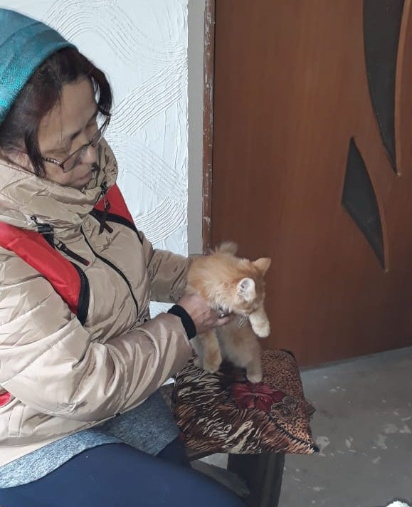

Kurama
I'm a big cat lover and my love has never been unrequited. But my family was against pets at home,especially my mom. But in on day she came at home with a small red cat. At the beginning he was the charming, affectionate cat. I spent all of my money to his treatment,house and food.

But after a month he understood that I love and will love him anywayhe. And he became became a domestic bully. He stole my jewelry, drink my tea and scratch me.
So it is a story about my abusive relationships with my super fluffy cat. By the way I give him this name because of demon-fox from Naruto. Maybe it was the mistake!